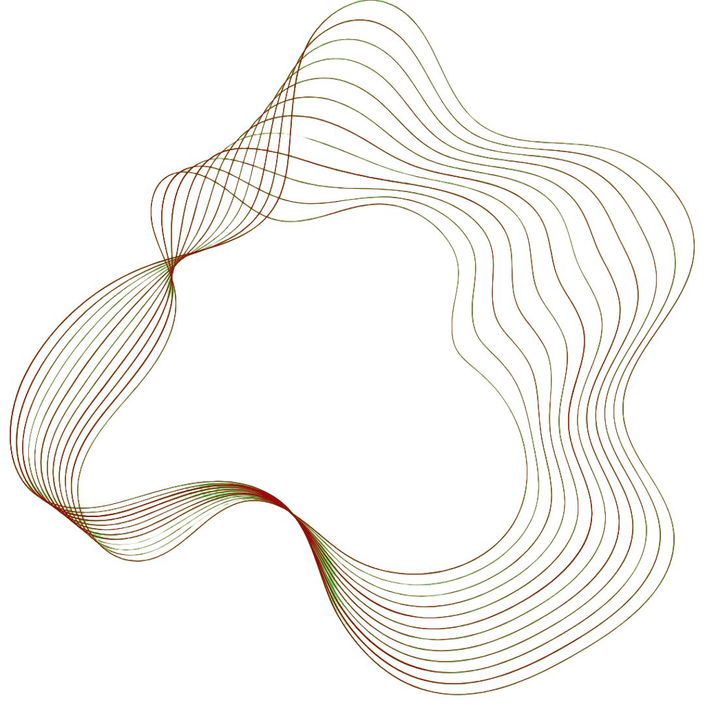

×

This page serves to demonstrate training, sharing, design courses, events,
Competitions and other activities I have participated in.
I am committed to developing both technical and soft skills, staying up to date
with industry trends, and actively participating in academic and professional
communities.
